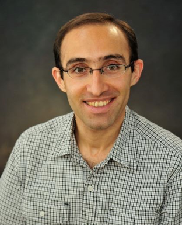

ABOUT EMPLOYER
The University of Guelph was established in 1964 when the Ontario Agricultural College, the MacDonald Institute, and the Ontario Veterinary College combined into one institution. As the university grew, more colleges for different fields of study were founded, leading to the creation of the College of Physical and Engineering Science in 1989.

Mohammed Biglarbegian is an Associate Professor for the College of Engineering at the University of Guelph, focusing his research on design, modeling, and control of mechatronics systems, intelligent and non-linear control, manipulators and mobile robots, multi-agent systems, and vehicle dynamics. This summer I worked with one of Professor Biglarbegian’s masters students, Spencer Ploeger, assisting him with his Stochastic Deep Learning Robotic Path Planning research project. Spencer has a Bachelor of Engineering, and completed his undergraduate degree in Engineering Systems and Computing at the University of Guelph.